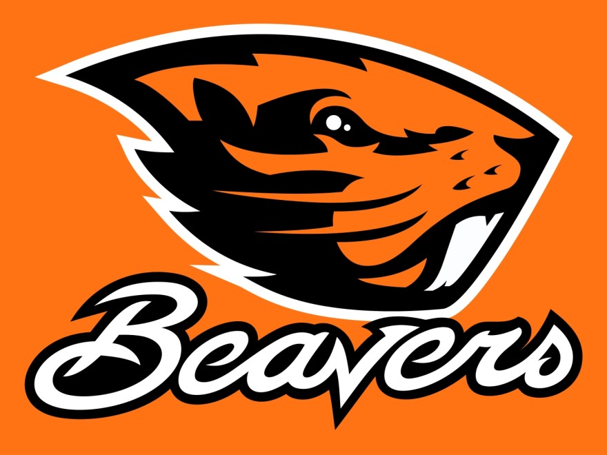

Homepage
When did it start?
Alltime Greats
Where does it take place?
College baseball takes place all over the U.S. With the championship game being in Omaha, Nebraska.
Some of the places where college baseball happens
- Omaha, Nebraska
- Coral Gabels, Flordia
- Winston-Salem, North carolina
- Stanford, california
- Baton Rouge, Louisana
- Lexington, Kentucky
- Auburn, Alabama
- Clemson, South carolina
- Gainsville, Flordia
- New york, New york
- Conway, Arkansas
- Charlottesville, Virgina
- Nashville, Tennessee
- Stillwater, oklahoma
- Terre Haute, Indiana
- Fayetteville, North Carolina
Previous Champions
- 2023:LSU
- 2022:Ole Miss
- 2021:Missippi state
- 2019:vanderbilt
- 2018:Oregon state
- 2017:Flordia
- 2016:Costal Carolina
- 2015: Virgina
- 2014: vanderbilt
- 2013: UCLA
- 2012: Arizona
- 2011: South Carolina
- 2010: South carolina

photo by pixy.org from wruf.com